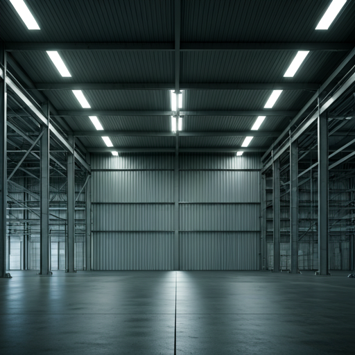

全球基础设施
应用场景 （典型场景）
面向复杂全球供应链的定制化解决方案，以架构化控制缩短实体距离与数字需求之间的落差。
场景 01
跨境电商
核心痛点
清关延迟不可预测、末端时窗偏慢，导致取消率升高，品牌出海规模化像一场高风险赌注。
Sinoport 方案
- bolt 通过预清关通道搭建直达消费者的履约链路。
- verified_user 超快交付网络可在 48 小时内覆盖 80% 的核心城市区域。

场景 02
品牌补货
核心痛点
库存压在错误区域、热销商品反而断货，同时多地自建仓带来沉重成本负担。
Sinoport 方案
- inventory_2 通过动态本地分拨节点实时平衡库存。
- monitoring 以轻投入方式建立本地履约能力，仅为实际使用容量付费。
场景 03
区域网络中转
核心痛点
欧亚多国中转链路碎片化严重，每一道边境合规摩擦都在拉长时效。
Sinoport 方案
以统一的 Sinoport OS 可视能力覆盖所有中转节点，并通过自动化区域合规文件显著缩短边境等待时间。
142+
全球节点
24/7
合规支持
准备重新设计你的供应链了吗？
我们的团队可以根据你的业务目标与扩张计划，定制最匹配的履约场景方案。